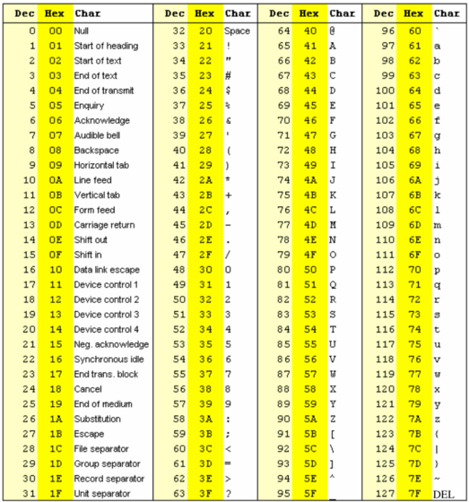
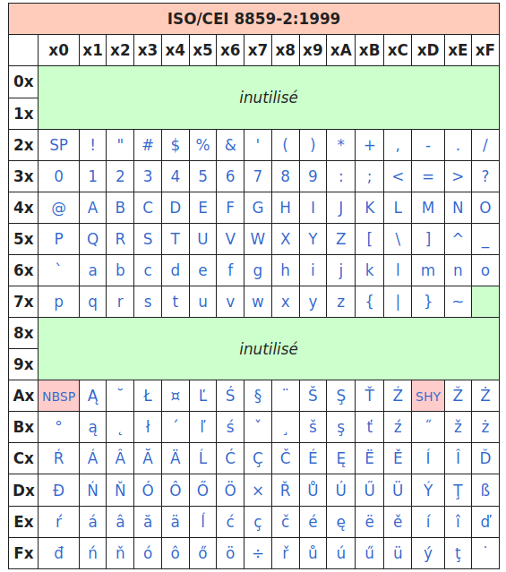
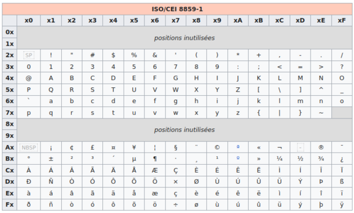
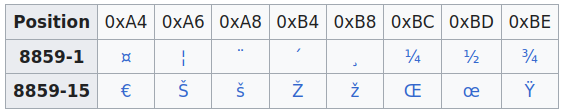

En PHP, une chaîne de caractères est une série de caractères (0, 1 ou plusieurs), où un caractère est un octet. Un octet dans une chaîne de caractères PHP peut avoir n'importe quelle valeur (256 valeurs possibles). On peut donc trouver dans une chaîne de caractères PHP des octets valant 0, des sauts de ligne, des tabulations, etc.
Le type string en PHP est implémenté sous la forme d'un tableau d'octets accompagné d'un entier indiquant la taille du tableau.
L'encodage utilisé est celui du script. Il est recommandé d'encoder les scripts PHP en UTF-8. (Les scripts de ce toturiel sont encodés en UTF-8). Comme PHP ne supporte pas nativement l'Unicode, nous serons amenés à utiliser l'extension mb_string (mb pour multi bytes, c'est à dire multi octets).
Nous allons, dans cette partie, faire quelques rappels sur le codage des caractères.
L'ASCII (American Standard Code for Information Interchange) utilise 7 bits pour représenter un caractère : ils sont donc numérotés en décimal de 0 à 127 et codés en binaire de 0000000 à 1111111. Le coadge ASCII ne permet donc de représenter que 128 caractères.

Les caractères de numéro 0 à 31 et le 127 ne sont pas affichables : ils correspondent à des commandes de contrôle de terminal informatique. Le caractère numéro 32 est l'espace. Les autres caractères sont les chiffres arabes, les lettres latines majuscules et minuscules sans accent et quelques symboles de ponctuation.
Comme les ordinateurs travaillent sur huit bits (un octet), chaque caractère d'un texte en ASCII est donc stocké dans un octet, d’où l’idée d’utiliser ce 8ème bit pour définir des caractères numérotés de 128 à 255.
Il existe différentes pages de codes qui étendent sur 8 bits le code ASCII 7 bits, d’où des problèmes de compatibilité souvent rendus visibles par le fait que les caractères comme les « lettres accentuées » (éÈ...) et des lettres comme ‘ç’ s'affichent mal.
On peut citer à titre d'exemples quelques pages parmi les 16 pages de codes de la norme ISO/CEI 8859 :



Bien entendu, tous ces encodages ASCII étendus sur 8 bits sont comptatibles avec le codage ASCII sur 7 bits (i.e. : les codes allant de 0 à 127 en décimal représentent le même caractère).
Unicode est un standard informatique qui permet des échanges de textes dans différentes langues, à un niveau mondial. Elle est développée par le Consortium Unicode, qui vise à permettre le codage de texte écrit en donnant à tout caractère de n’importe quel système d'écriture un nom et un identifiant numérique, et ce de manière unifiée, quelle que soit la plate-forme informatique ou le logiciel.
Le répertoire Unicode peut contenir plus d'un million de caractères, ce qui est bien trop grand pour être codé par un seul octet (limité à des valeurs entre 0 et 255).
Chaque caractère est repéré dans cet ensemble par un index entier aussi appelé « point de code ». Par exemple le caractère "€" (euro) est le 8365e caractère du répertoire Unicode. Son index, ou point de code, est donc 8364 (on commence à compter à partir de 0).
La norme Unicode définit donc des méthodes standardisées pour coder cet index (ou point de code) sous forme de séquence d'octets : UTF-8 est l'une d'entre elles, avec UTF-16, UTF-32.
UTF-8 (Universal Character Set Transformation Format 8 bits) est un codage de caractères informatiques conçu pour coder l'ensemble des caractères internationaux d'Unicode en restant compatible avec la norme ASCII. Son usage est de plus en plus courant sur l’Internet, et dans les systèmes devant échanger de l'information.
En UTF-8, les caractères Unicode sont codés sous forme de séquences de 1 à 4 octets chacun.
Les caractères ayant un point de code compris entre 00 et 7F (en hexadécimal) sont codés sur un seul octet dont le bit de poids fort est nul, ce qui assure la compatibilité avec le codage ASCII.
Les caractères avec un point de code (strictement) supérieur à 7F sont codés sur plusieurs octets. Les bits de poids fort du premier octet forment une suite de 1 de longueur égale au nombre d'octets utilisés pour coder le caractère, les octets suivants ayant 10 comme bits de poids fort.
| Définition du nombre d'octets utilisés | |
| Representation binaire en UTF-8 | Signification |
| 0xxxxxxx | 1 octet codant 1 à 7 bits |
| 110xxxxx 10xxxxxx | 2 octets codant 8 à 11 bits |
| 1110xxxx 10xxxxxx 10xxxxxx | 3 octets codant 12 à 16 bits |
| 11110xxx 10xxxxxx 10xxxxxx 10xxxxxx | 4 octets codant 17 à 21 bits |
Dans le tableau ci-dessus, le nombre de x correspond au nombre maximal de bits d'un point de code qu'on peut placer dans un code UTF-8 sur N octets (avec N compris entre 1 et 4).
Exemples :
| Caractère | Point de code (en décimal) | Code UTF-8 (en hexadécimal) |
| 'A' | 65 | 0x41 |
| 'é' | 233 | 0xC3 0xA9 |
| '€' (euro) | 8364 | 0xE2 0x82 0xAC |
Le point de code du caractère 'A' est égal à 65 en décimal, 0x41 en hexadécimal, et donc 01000001 en binaire.
Donc, le code binaire de ce point de code tient sur 7 bits; et par conséquent, son code UTF-8 est constitué d'un seul octet
égal à 01000001 en binaire, et 0x41 en hexadécimal.
Le point de code du caractère accentuée 'é' est égal à 233 en décimal, 0xE9 en hexadécimal, et donc 11101001 en binaire.
Donc, le code binaire de ce point de code tient sur 8 bits; et par conséquent, son code UTF-8 est constitué de 2 octets.
Pour obtenir, ces 2 octets, on part du "patron" 110xxxxx 10xxxxxx, et on remplace les
x par les bits du point de code en binaire en commençant par la droite, ce qui donne le
code binaire 11000011 10101001, et donc C3 A9
en hexadécimal.
Le point de code du caractère '€' est égal à 8364 en décimal, 0x20AC en hexadécimal, et donc 0010; 0000; 1010; 1100 en binaire.
Donc, le code binaire de ce point de code tient sur 14 bits; et par conséquent, son code UTF-8 est constitué de 3 octets.
Pour obtenir, ces 3 octets, on part du "patron" 1110xxxx 10xxxxxx 10xxxxxx, et on remplace les
x par les bits du point de code en binaire en commençant par la droite, ce qui donne le
code binaire 11100010 10000010 10101100, et donc E2 82 AC
en hexadécimal.
Dans une suite d'octets représentant une chaîne en UTF-8, un octet a son bit de poids fort égal à 0 (i.e. une valeur décimale inférieure ou égale à 127), si et seulement si il correspond au code d'un caractère codé sur un seul octet. Dit autrement, tout octet avec un bit de poids fort égal à 1 (i.e. une valeur décimale supérieure ou égale à 128) fait partie du code UTF-8 d'un caractère qui est codé sur plus d'un octet (au moins 2).